| 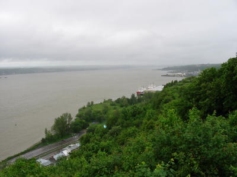 008 St. Lawrence River | 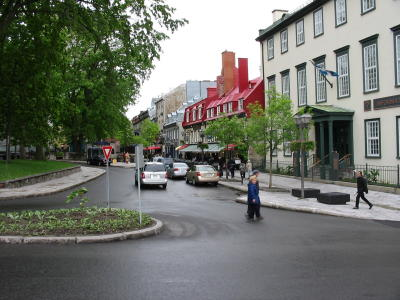 009 | 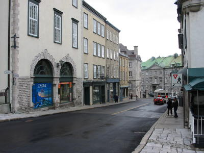 010 |
| 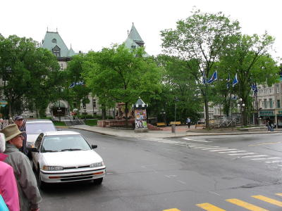 012 Jardin de l'Hôtel-de-Ville | 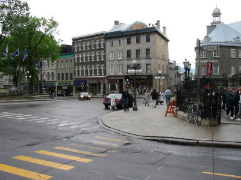 011 | 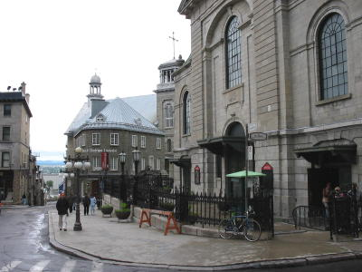
013 Musée de
l'Amérique-française Notre-Dame de Québec Basilica Cathedral |
| 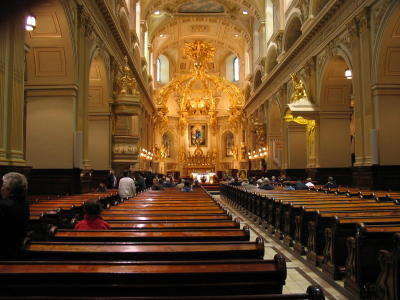 014 Notre-Dame de Québec Basilica Cathedral | 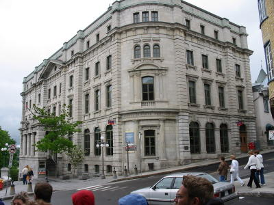 015 Post Office | 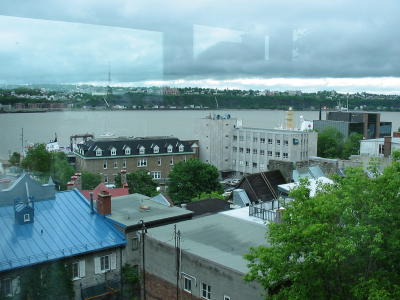 016 St. Lawrence River from the Funicular |
| 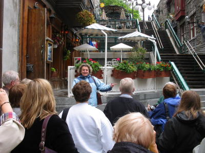 017 Margarita, our tour guide | 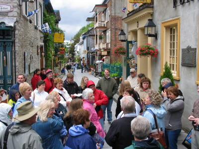 019 | 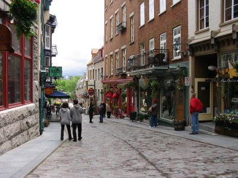 020 |
| 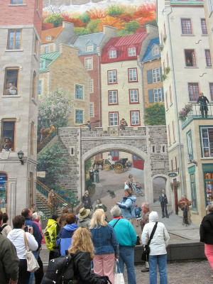 021 Trompe l'oeil | 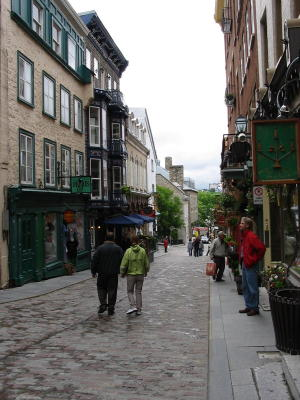 018 | 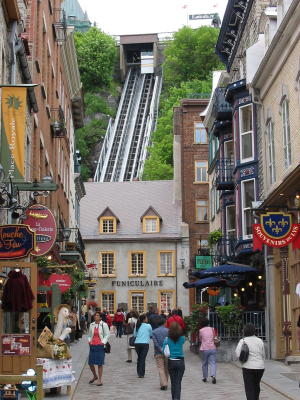 027 Funicular | 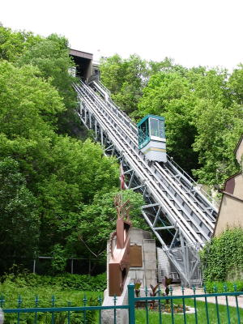 023 |
| 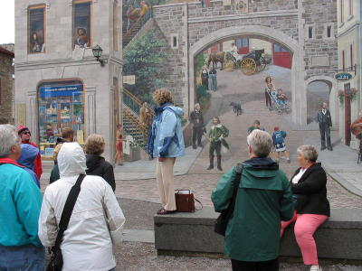 022 Trompe l'oeil | 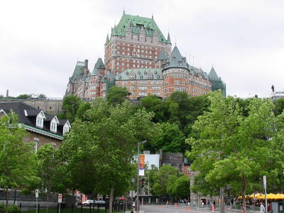 030 Chateau Frontenac | 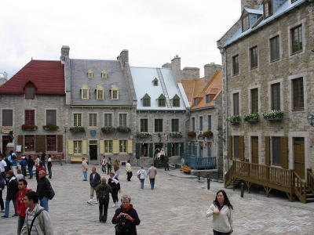 026 Place Royale |
| 031 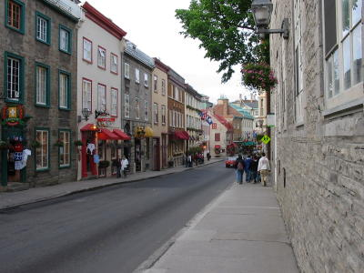 | 028 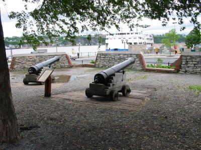 | 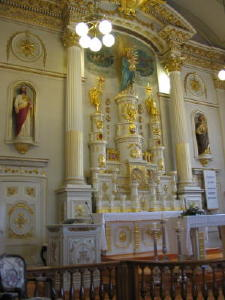
025 Notre-Dame-des-Victoires |
080 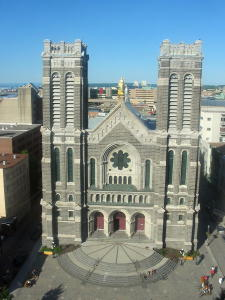 |
081 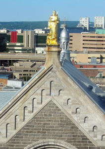 |
ÉGLISE SAINT-ROCH The Saint-Roch Church, inspired by
the architecture of the Middle Ages, combines two architectural styles.
The façade follows the neo-Gothic tradition and the inside of the church
follows the neo-Roman tradition. It is a perfect example of the revival
that began to emerge with respect to religious architecture throughout the
province of Québec at the beginning of the 20th century. The church,
constructed between 1914 and 1923, was erected on the site of the two
previous churches.
|
| 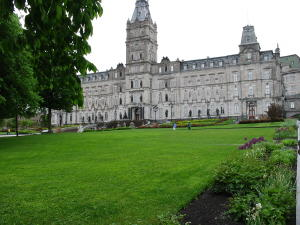 002 | 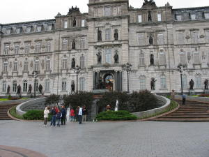 005 | 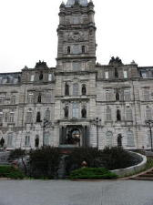 006 | 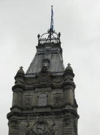 007 |
| 049 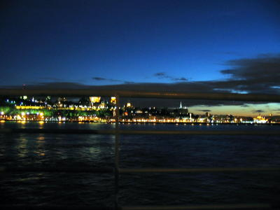 | 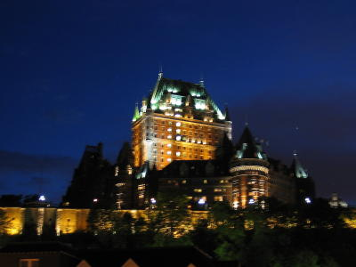 | 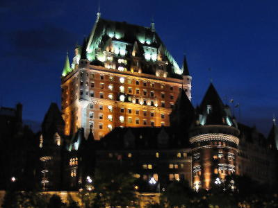 |